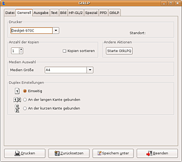

Druckwerkzeuge
Zum Verständnis dieses Artikels sind folgende Seiten hilfreich:
Dieser Artikel widmet sich verschiedenen Hilfsprogrammen rund um das Drucken. Dabei werden spezielle Programme für bestimmte Aufgaben und druckerspezifische Werkzeuge kurz besprochen. Dem Thema mehrseitige Ausgaben inkl. Falz widmet sich ein eigener Artikel: Broschürendruck.
Boomaga¶
Boomaga (Booklet manager) ist ein virtueller Drucker, mit dem die Ausgabe eines Druckauftrags angezeigt werden kann, bevor diese an einen Drucker übergeben wird. Durch seine Position zwischen Anwenderprogramm und Drucker erlaubt es eine universell nutzbare Druckvorschau auch bei Anwendungen, in denen diese Funktion nicht vorgesehen ist. Zusätzlich kann das Layout des Ausdrucks noch angepasst (Druck mehrerer Seiten auf einer) und mehrere Druckaufträge zu einem zusammengefasst werden.
CUPS-PDF¶
CUPS-PDF ist ein Backend für den Druckdienst CUPS. Es handelt sich ein Programm mit einer langen Tradition: bis einschließlich Ubuntu 8.04 war es standardmäßig vorinstalliert und wurde genutzt, um Dokumente programmunabhängig im PDF-Format drucken zu können. Ab Ubuntu 8.10 wurde es durch die Funktion gtkprint abgelöst, das zumindest bei GTK-basierenden Anwendungen eine Postscript- bzw. PDF-Datei direkt erzeugen kann. Dazu wird im Dialog "Drucken" der virtuelle Drucker "In Datei drucken" ausgewählt und das Ausgabeformat sowie der Name der Datei angegeben. Inzwischen enthält auch KDE eine entsprechende Funktion.
Möchte man in wirklich allen Programmen PDF-Dateien erzeugen, bietet sich dennoch die zusätzliche Einrichtung von CUPS-PDF an.
Tea4CUPS¶
Tea4CUPS  ist ein weiteres Backend für CUPS, das umfangreiches Pre- und Postprocessing von Druckdaten und -aufträgen ermöglicht. Konkrete Beispiele wären das Senden des gleichen Druckauftrags an mehrere Drucker, das automatisierte Archivieren sämtlicher Druckaufträge als PDF-Dokumente oder auch das Unterbinden versehentlicher, doppelter Druckaufträge. Die Konfiguration wird in der Datei /etc/cups/tea4cups.conf vorgenommen. Als Filter können mitunter direkte Befehle oder Bash-Skripte unter Berücksichtigung verschiedener Umgebungsvariablen eingesetzt werden. Das Debian-Wiki bietet dazu im Artikel Tea4CUPS eine Übersicht mit verschiedenen Beispielen.
ist ein weiteres Backend für CUPS, das umfangreiches Pre- und Postprocessing von Druckdaten und -aufträgen ermöglicht. Konkrete Beispiele wären das Senden des gleichen Druckauftrags an mehrere Drucker, das automatisierte Archivieren sämtlicher Druckaufträge als PDF-Dokumente oder auch das Unterbinden versehentlicher, doppelter Druckaufträge. Die Konfiguration wird in der Datei /etc/cups/tea4cups.conf vorgenommen. Als Filter können mitunter direkte Befehle oder Bash-Skripte unter Berücksichtigung verschiedener Umgebungsvariablen eingesetzt werden. Das Debian-Wiki bietet dazu im Artikel Tea4CUPS eine Übersicht mit verschiedenen Beispielen.
Tea4CUPS ist im Rahmen des Projekts PyKota in Python entwickelt worden und wurde unter GPL 2.0 lizensiert.
Um das Backend verwenden zu können, muss folgendes Paket installiert [1] werden:
cups-tea4cups (universe)
 mit apturl
mit apturl
Paketliste zum Kopieren:
sudo apt-get install cups-tea4cups
sudo aptitude install cups-tea4cups
GNOME Photo Printer¶
GNOME Photo Printer ist ein Programm, um einfach Fotos zu drucken. Man kann die Fotos aus dem Dateimanager in das Programm ziehen. Die Papier- und die Fotogröße, alle druckertypischen Einstellungen können angepasst werden. Es gibt eine Vorschaufunktion, und die Bilder können auf Papiergröße skaliert werden.
Es muss das folgende Paket installiert [1] werden:
gnome-photo-printer (universe, nur bis einschließlich Ubuntu 13.04)
mit apturl
Paketliste zum Kopieren:
sudo apt-get install gnome-photo-printer
sudo aptitude install gnome-photo-printer
GtkLP¶

GtkLP ist ein weiteres grafisches Frontend für CUPS. Es hilft dem Benutzer, die optimalen Einstellungen für den/die vorhandenen Drucker zu finden. Man kann es auch als Erweiterung für die normalen Druckdialoge nutzen. GtkLP wird dann von Programmen wie ein Ghostscript-Drucker angesprochen: man braucht nur den gtklp als Druckbefehl einzutragen.
Einige Optionen:
gerade/ungerade Seiten drucken
umgekehrte Reihenfolge der Ausgabe
Druckqualität
Mehrere Seiten auf eine Seite drucken
Mit "Speichern unter" kann man mehrere Profile zum Ausdrucken erstellen.
Es muss das folgende Paket installiert [1] werden:
gtklp (universe)
mit apturl
Paketliste zum Kopieren:
sudo apt-get install gtklp
sudo aptitude install gtklp
Manueller Duplexdruck¶
Wenn man mehrere Seiten auf eine drucken will und zudem noch beidseitig (Duplex), muss man nur unter Ausgabe die entsprechenden Einstellungen machen: "Papierausnutzung -> Seiten pro Blätter -> 4" und "gerade Seiten" oder "ungerade Seiten " je nach Drucker).
Hinweis:
"Druckbereich" gibt nicht die Seiten des Dokuments, sondern der Ausgabe an. Wenn ein Dokument zum Beispiel 20 Seiten hat und man 4 pro Seite ausdruckt, besteht die Ausgabe aus 5 Seiten. Bei einem Druckbereich von 1-4 werden also nicht die ersten 4 Seiten des Dokuments gedruckt, sondern 1-16.
PhotoPrint¶
 Ein sehr leistungsfähiges und vielseitiges Programm zum Ausdrucken von Fotos, Postern, CDs etc. Verwendet werden standardmäßig die CUPS-Gutenprint-Treiber; u.a. mit TurboPrint ist auch randloser Ausdruck möglich - einen entsprechenden Drucker vorausgesetzt. Eine genaue Beschreibung findet sich im Artikel PhotoPrint.
Ein sehr leistungsfähiges und vielseitiges Programm zum Ausdrucken von Fotos, Postern, CDs etc. Verwendet werden standardmäßig die CUPS-Gutenprint-Treiber; u.a. mit TurboPrint ist auch randloser Ausdruck möglich - einen entsprechenden Drucker vorausgesetzt. Eine genaue Beschreibung findet sich im Artikel PhotoPrint.
PosteRazor¶
Dieses Programm macht es möglich, große Bilddateien in mehrere Teile zu zerschneiden. Anschließend kann man diese Teile einzeln ausdrucken und die Seiten mit Klebstoff wieder zu einem Ganzen zusammenfügen. PosteRazor automatisiert die Druckvorstufe für den großformatigen Posterdruck und macht billigen Posterdruck auch mit A4-Druckern möglich. Weitere Informationen im Artikel PosteRazor.
Druckerspezifische Werkzeuge¶
Epson Printer Utility¶
Epson bietet seit Anfang 2015 im Epson Download Center das Tool "epson-printer-utility" manpage für Tintenstand und Düsenreinigung an. Das Programm muss aus dem Terminal mit dem Befehl
epson-printer-utility
gestartet werden. Alternativ kann man sich einen Starter für einfachere Verwendung anlegen.
mtink¶
mtink  ist ein Programm für ältere Epson-Tintendrucker, das den Füllstand von Tintenpatronen auslesen, die Düsen reinigen und den Druckkopf ausrichten kann. Die problemlosere Alternative auch für ältere Geräte ist das "epson-printer-utility". Folgendes Paket muss installiert [1] werden:
ist ein Programm für ältere Epson-Tintendrucker, das den Füllstand von Tintenpatronen auslesen, die Düsen reinigen und den Druckkopf ausrichten kann. Die problemlosere Alternative auch für ältere Geräte ist das "epson-printer-utility". Folgendes Paket muss installiert [1] werden:
mtink (universe)
mit apturl
Paketliste zum Kopieren:
sudo apt-get install mtink
sudo aptitude install mtink
Nach der Installation hat man nun zwei Programme:
mtink - grafischer Statusmonitor
ttink - die Kommandozeilenversion von mtink
Beide Programme benötigen Root-Rechte [2]. Mit dem Befehl [3]:
gksudo mtink
wird der Füllstand der Patronen angezeigt. Anmerkung: ab Ubuntu 13.10 muss vorher noch das Paket gksu nachinstalliert werden.
Ab Ubuntu 11.04 muss noch ein Kernelmodul geladen (und anschließend entladen) werden. Damit ändert sich der Aufruf zu:
sudo modprobe usblp gksudo mtink sudo modprobe -r usblp
ttink¶
In einem Terminal [3] gibt
ttink -l
eine Liste der bekannten Drucker aus. Es sollte jedoch mit jedem Epson-Drucker funktionieren. Der Epson C44UX taucht z.B. nicht auf, aber er funktioniert.
sudo ttink -d /dev/usb/lp0
zeigt den Füllstand der Patronen an (sofern der Drucker per USB angeschlossen und lp0 ist). Mit
sudo ttink -d /dev/usb/lp0 -c
werden die Düsen gereinigt.
Weitere Optionen:
| Optionen | |
| Parameter | Beschreibung |
-d GERÄTEDATEI, --device GERÄTEDATEI | Siehe obige Beispiele - zwingend erforderlich! |
-m NAME, --model NAME oder NUMMER | Ohne diese Angabe wird der Drucker automatisch bestimmt |
-D, --D4 | D4-Protokoll immer verwenden |
-r, --reset | Drucker zurücksetzen |
-c, --clean | Düsenreinigung |
-n, --nozzle-check | Düsentest |
-s, --status | Standardauftrag |
-a, --align-head | Köpfe ausrichten |
-e, --exchange-ink | Patronen wechseln |
-i, --identity | Drucker-Identifizierung ausgeben (nicht bei allen Druckern möglich) |
-v, --version | Version ausgeben |
-l, --list-printer | Bekannte Drucker ausgeben |
-L | D4 Protokollausgabe zur Fehlerdiagnose auf stderr |
-u | Textausgabe erfolgt in UTF-8 Kodierung |
 Übersichtsartikel
Übersichtsartikel- Erstellt mit Inyoka
-
 2004 – 2017 ubuntuusers.de • Einige Rechte vorbehalten
2004 – 2017 ubuntuusers.de • Einige Rechte vorbehalten
Lizenz • Kontakt • Datenschutz • Impressum • Serverstatus -
Serverhousing gespendet von